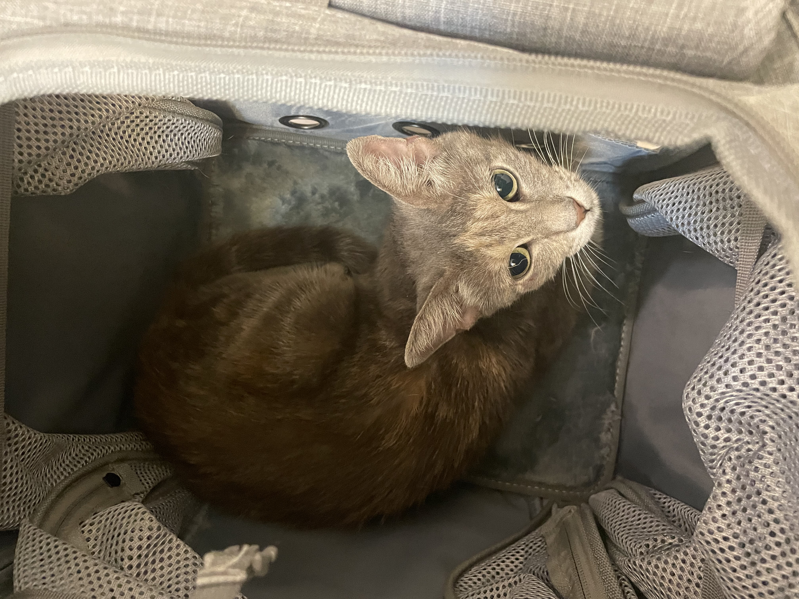

Meaningful Work
Happy’s connects people with paid local opportunities through its marketplace.
Explore the Marketplace →Our Mission / Houston
To protect vulnerable lives, animal and human, by employing Houston youth in purpose-driven work that funds compassionate care for the animals most at risk of suffering alone.

One model. Two ways to create impact.
Happy’s connects people with paid local opportunities through its marketplace.
Explore the Marketplace →Happy’s Foundation works to protect vulnerable animals and expand access to responsible help.
Explore Animal Welfare →Commercial activity creates paid opportunity and a sustainable source of support, while Happy’s Foundation independently advances the animal-welfare mission.
What the mission does
Help vulnerable animals.
Make responsible animal-welfare resources easier to find.
Give people useful information that supports better animal care.
Expand fostering, partnerships, and community support.